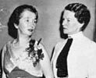
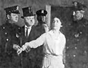
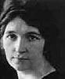
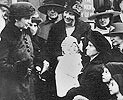
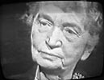
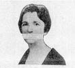

Image Credits

|
The Board of Directors of the American Birth Control League, 1935 |

|
Testifying before Congress, 1935 |

|
1940s in Tucson |
|  | Sanger and Katharine Houghton Hepburn at the Birth Control Comes of Age Conference, 1935 |

|
Detail from a 1939 photo of MS entertaining orphans from the Arizona Children's Home for Christmas. (Courtesy of the Margaret Sanger Papers Project). |
|  | Still from the motion picture Birth Control (1917) |
Detail from 1935 portrait | |
Still image from video of Margaret Sanger 1957 interview with Mike Wallace |
|

|
Cover of Family Limitation, 1917 (Courtesy of Margaret Sanger Papers Project) |

|
Cover of the March 1914 issue of the Woman Rebel. |

|
Margaret Sanger, seated at a desk, ca. 1930s. |

|
Detail from a 1917 flyer. (Courtesy of the Margaret Sanger Papers Project) |
|  | Detail from a portrait, ca. 1915 |

|
Detail from a portrait, 1898. |

|
Detail from the January 1934 Conference on Birth Control and American Revovery (Courtesy of the Margaret Sanger Papers Project). |

|
1917 portrait |
|  | Sanger and Brownsville clinic mothers and supporters at her 1917 trial |

|
Portrait from the mid-1950s |
Detail from a portrait, ca. mid-1950s. |
|
| Still image from video of Margaret Sanger 1957 interview with Mike Wallace (Courtesy of the Sophia Smith Collection, Smith College) | |

|
ca. 1900 (Courtesy of the Sophia Smith Collection, Smith College) |
|  | Still image from video of Margaret Sanger 1957 interview with Mike Wallace |

|
Detail of cover of British edition of Family Limitation (Courtesy of the Margaret Sanger Papers Project) |
Detail from portrait, ca. 1941. |
|

|
Detail of portrait, ca. early 1940s. |

|
Detail from a 1929 portrait. (Courtesy of the Library of Congress) |
|  | Detail from poster advertising the Ford Hall Frolic, April 1929 (Courtesy of the Library of Congress) |

|
Sanger and Abraham Stone at the at the 1959 International Conference for Planned Parenthood, New Delhi. |

|
Cover of The Selected Papers of Margaret Sanger, Volume I, 1900-1928 (Courtesy of the University of Illinois Press). |

|
Detail from 1930 portrait |

|
Detail, Sanger and Ethel Higgins Byrne, Jan. 1916 at Woman Rebel hearings |
Cover of the 1960 World Tribute to Margaret Sanger (Courtesy of the Margaret Sanger Papers Project) |
|

|
Detail from portrait, late 1950s. (Courtesy of the Library of Congress) |
Detail from 1959 photo from the International Conference on Planned Parenthood (Courtesy of the Margaret Sanger Papers Project) |
|

|
Sanger with Baroness Shidzue Ishimoto in Japan, 1936 |

|
Sanger and Jawaharlal Nehru at the 1959 International Conference for Planned Parenthood, New Delhi. (Courtesy of the Margaret Sanger Papers Project) |

|
Detail from portrait, ca. 1935 |